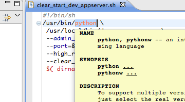

Eclipse の Shell Script エディタ
Update: 2013-04-25
追記 ( 2013-04-25 )：
Eclipse 4.2 ( Juno ) の場合はこちらのURLを使ってください。
https://downloads.sourceforge.net/project/shelled/shelled/ShellEd%202.0.2/update
追記 ( 2012-04-21 )：
下の文章を書いたときとは別の環境で同じ手順を試すとダメでした。
http://download.eclipse.org/technology/linuxtools/updateから Man Page Viewer を入れるとうまくいきました。
Eclipse で Shell Script をちょっと書きたいというとき、 Text Editor でもいいのですが、せめて色つけくらいしてくれるものはないかと探してみました。 ShellEd というのがあります。 Eclipse Marketplace の案内に従って Zip ファイルダウンロードしてインストールしたらうまくいきません。 man の表示もしてくれるというすぐれものらしいのでもう少し粘って探してみたら Installation Guide に Update サイトの案内がありました。
https://downloads.sourceforge.net/project/shelled/shelled/ShellEd%202.0.1/update
私の環境が Java 6 なのを確認して、このアップデートサイトからインストールするとエラー無しで完了。拡張子 .sh のファイルを開いてみると、色付いてます。 Eclipse の環境設定の Shell Script > Interpreters に /bin/bash を追加すると Mac OS X でも man の表示ができました。 Windows はだめじゃないかな。。。
